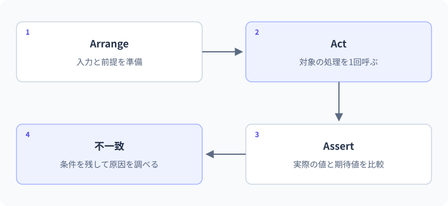

26 デバッグと単体テスト — 詳細解説
Arrange・Act・Assert。
図解：Arrange・Act・Assert

期待値と実際の結果の比較
コンパイルに成功したコードでも、境界値で計算を間違えたり、エラー時に状態を壊したりします。デバッグは動作を観察して原因を調べる作業、テストは期待する結果と実際の結果を比較して仕様を確かめる作業です。どちらも「エラーが出ないから大丈夫」という判断を具体的な根拠へ変えるために使います。
単体テストは、狭い範囲の処理を他の大きな仕組みからなるべく切り離して確かめるものです。結合テストは、複数の部品が連携したときの動作を確かめます。APIをHTTP経由で確かめる場合は、経路や変換も含めた結合テストになります。
最小例：期待値を固定して比べる
次はテストフレームワークを導入する前に、比較の本質を理解するコンソール例です。このページ上でコードを実行しているわけではありません。
int actual = ShippingFee(5000);
int expected = 0;
if (actual != expected)
{
throw new InvalidOperationException($"期待:{expected} 実際:{actual}");
}
Console.WriteLine("境界5000の比較が一致");
static int ShippingFee(int subtotal)
{
return subtotal >= 5000 ? 0 : 500;
}期待出力は境界5000の比較が一致です。「5000以上なら送料0」という仕様をexpected=0で表し、メソッドを呼んだ結果と比較しています。結果を見てから期待値を書き換えると、間違いを正当化するだけになってしまいます。期待値は仕様から決めます。
Arrange・Act・Assertで読み分ける
Arrangeは準備、Actは検証対象の操作、Assertは期待との比較です。名前を覚えることより、準備と操作と判断が混ざっていないことが重要です。
- 1Arrange：準備
入力5000、期待する送料0
- 2Act：操作
ShippingFee(5000)を呼ぶ
- 3Assert：比較
実際の送料が0と一致するか
- 4不一致なら調査
仕様・入力・条件式・値を確認
一つのテストであまり多くの無関係な操作を行うと、どこが原因か分かりにくくなります。条件の境界、入力不正、状態変更など、確かめたい理由で分けます。
間違い：境界を一つずらす
Console.WriteLine(ShippingFee(4999));
Console.WriteLine(ShippingFee(5000));
Console.WriteLine(ShippingFee(5001));
static int ShippingFee(int subtotal)
{
return subtotal > 5000 ? 0 : 500;
}観察結果は500、500、0です。仕様が5000以上なら、中央が間違っています。修正箇所は>を>=へ変える条件式です。4999、5000、5001のように境界の直前・境界・直後を選ぶと、ずれを発見しやすくなります。
Console.WriteLine(ShippingFee(4999));
Console.WriteLine(ShippingFee(5000));
Console.WriteLine(ShippingFee(5001));
static int ShippingFee(int subtotal)
{
return subtotal >= 5000 ? 0 : 500;
}修正後の期待出力は500、0、0です。100や10000だけで確認すると、誤った条件式でも見逃します。
デバッガーで処理が進む場所を見る
デバッガーは、実行を一時停止して変数や呼び出し関係を観察する道具です。ブレークポイントは停止したい場所の目印、ステップ実行は一段ずつ処理を進める操作、ウォッチは式や変数の値を観察する機能です。具体的なボタンやキーはエディターの設定で異なるため、機能名と目的をまず理解します。
送料例ならreturn行に停止し、subtotalが5000であること、subtotal > 5000がfalseになることを確認します。思い込みで「メソッドに5000を渡したはず」とせず、実際の値を見ます。コールスタックは、その場所へどのメソッド呼び出しを経て到達したかを表示します。
| 観察 | 確かめること | よくある発見 |
|---|---|---|
| 引数 | 呼び出し元から何を受け取ったか | 単位・順番・変換が違う |
| 分岐条件 | true/falseのどちらか | 境界演算子が違う |
| 変更前後 | どの状態を書き換えたか | 別の参照も共有していた |
| 呼び出し履歴 | どこから来たか | 想定外の経路がある |
| 例外の発生点 | 最初に失敗した操作 | 後続の表示行が原因ではない |
xUnitで繰り返し検証を自動化する
xUnitは.NETのテストを記述・実行するためのフレームワークです。Factは一つの事実を確かめるテスト、Theoryは入力データを変えて同じ性質を確認するテストに使います。属性は宣言へ追加情報を付ける構文で、テストツールが対象を見つける目印になります。
次はxUnitを参照するテストプロジェクトに置くコードです。通常のProgram.csへ貼るだけではxUnitの参照がないのでビルドできません。テンプレートや参照する版は導入したSDKと公式手順で確認し、復元後にdotnet testで確かめます。
using Xunit;
public sealed class ShippingTests
{
[Theory]
[InlineData(4999, 500)]
[InlineData(5000, 0)]
[InlineData(5001, 0)]
public void FeeDependsOnThreshold(int subtotal, int expected)
{
int actual = ShippingFee(subtotal);
Assert.Equal(expected, actual);
}
private static int ShippingFee(int subtotal)
{
return subtotal >= 5000 ? 0 : 500;
}
}期待する検証結果は3ケースとも一致です。この成果物の環境ではSDKとパッケージ復元を利用できないため、実測結果ではなく期待結果です。実務では検証対象のメソッドを本体プロジェクトから参照します。上の自己完結した例はテスト構造を読むために同じクラス内へ置いています。
Assert.Equalの第一引数が期待値、第二引数が実際の値です。逆にしても一致判定は同じ場合がありますが、失敗メッセージの意味が逆転するので順を守ります。
状態変更を伴うテスト
var stock = new Stock(3);
bool accepted = stock.TryTake(2);
Check(accepted, "2個の要求が通る");
Check(stock.Count == 1, "残数は1");
bool rejected = stock.TryTake(2);
Check(!rejected, "不足時は拒否");
Check(stock.Count == 1, "拒否時も残数は1");
Console.WriteLine("4つの比較が一致");
static void Check(bool condition, string description)
{
if (!condition) throw new InvalidOperationException(description);
}
public sealed class Stock
{
public int Count { get; private set; }
public Stock(int count)
{
if (count < 0) throw new ArgumentOutOfRangeException(nameof(count));
Count = count;
}
public bool TryTake(int quantity)
{
if (quantity <= 0 || quantity > Count) return false;
Count -= quantity;
return true;
}
}期待出力は4つの比較が一致です。成功したかだけでなく、成功後の残数、失敗時に状態が変わらないことまで確認しています。状態を持つインスタンスをテスト間で使い回すと、実行順に依存することがあるため、原則として各テストの準備を独立させます。この例は同じシナリオ内の連続操作なので一つのStockを使っています。
間違い：非同期テストで待たない
非同期処理をテストから呼ぶときもawaitが必要です。呼び出しただけでテストメソッドが戻ると、比較や例外より先にテストが終わる可能性があります。戻り値をTaskにし、処理と非同期の例外検証を最後まで待ちます。
using Xunit;
public sealed class AsyncTests
{
[Fact]
public async Task LoadReturnsSeven()
{
int actual = await LoadAsync();
Assert.Equal(7, actual);
}
private static async Task<int> LoadAsync()
{
await Task.Delay(1);
return 7;
}
}期待する比較は7と一致です。async voidのテストへしないこと、Taskを捨てないことが重要です。待機時間を長く設定して偶然終わるのを待つ方法ではなく、完了を表すTaskをawaitします。
テストしやすさは責務の分け方に現れる
現在日時、ファイル、ネットワークへ直接依存すると、テストの結果が環境で変わる場合があります。計算や判断は入力を受け取って結果を返す部品へ分け、外部との入出力は別にします。必要ならinterfaceで読み取り先を差し替えます。ただし、単純な計算へ不必要なinterfaceを大量に追加する必要はありません。
次のレッスンでは、入力を受け取る部分、業務ルール、状態変更を分けます。テストのためだけの特殊なコードではなく、目的を説明できる構造が結果として検証しやすくなります。
3段階の練習
基礎：送料の閾値を3000へ変更した仕様について、2999、3000、3001の期待値を書いてからコードを直します。答えは500、0、0です。先に期待値を決めることが目的です。
標準：Stock.TryTakeについて0、負数、在庫と同数、在庫超過を検証します。0・負数・超過はfalseで残数維持、同数はtrueで0です。falseだけ確認して残数を見ないのは不十分です。
応用：期限判定を「現在日時を内部で直接取得する処理」から「判定対象日と基準日を引数で受ける処理」へ分けます。過去・当日・翌日の期待値を固定できるようにします。外部依存をどこに残したかも説明してください。
境界・比較例：例外の期待条件を確認する
「例外が出なかった」ことを成功にするのではなく、このケースでは指定した種類の例外が出ることを期待しています。
bool rejected = false;
try { _ = SquareRoot(-1); }
catch (ArgumentOutOfRangeException) { rejected = true; }
Console.WriteLine(rejected ? "PASS" : "FAIL");
static double SquareRoot(double value)
{
if (value < 0) throw new ArgumentOutOfRangeException(nameof(value));
return Math.Sqrt(value);
}想定出力
PASS公式資料
確認日：2026年9月14日。本文の理解を補うための資料です。学習対象は.NET 10 / C# 14です。パッチ番号は固定しません。